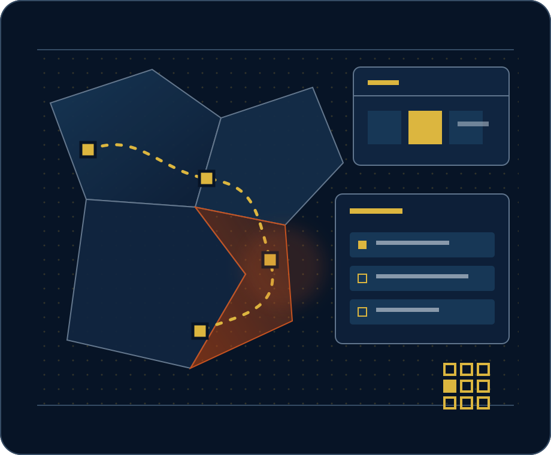

Jadual calon
Acara dan program, bersama senarai keputusan yang menunggu tindakan calon atau ejen pilihan raya.
UNTUK CALON & EJEN PILIHAN RAYA
Jadual calon, pasukan lapangan, kelulusan kandungan, pertanyaan media, perbelanjaan dan insiden. Enam urusan harian, disatukan untuk satu kerusi.
Akses demo diatur oleh Katalys. Tiada pendaftaran layan diri.
Disediakan oleh Katalys, dengan latihan untuk calon dan ejen pilihan raya.

Hafiz bin Rahman · P.160 Johor Bahru
JADUAL CALON
Acara dan keputusan dalam satu paparan.
PENEMPATAN LAPANGAN
Ketua lapangan hanya melihat zon masing-masing.
KELULUSAN KANDUNGAN
Belum boleh diluluskan
Draf tidak boleh diluluskan selagi semakan fakta masih terbuka.
PERTANYAAN MEDIA
Setiap pertanyaan media disertakan tarikh akhir.
PERBELANJAAN KEMPEN
Merekod perbelanjaan. Tidak menasihati tentang pematuhan atau menyekat perbelanjaan.
INSIDEN
Ditutup bersama rekod tindakan yang diambil.
Ilustrasi ruang kerja. Calon dan aktiviti ialah rekaan. Ilustrasi sahaja — tiada rekod kempen diubah.
URUSAN HARIAN
Satu tempat untuk keputusan, tugasan dan rekod yang diuruskan pasukan kempen setiap hari.
Acara dan program, bersama senarai keputusan yang menunggu tindakan calon atau ejen pilihan raya.
Pasukan dan tugasan mengikut zon dan daerah mengundi, dengan peta serta penanda tugasan lewat.
Semakan fakta mesti ditutup sebelum sesuatu draf boleh diluluskan.
Soalan wartawan direkodkan bersama tarikh akhir, supaya pasukan tahu perkara yang perlu dijawab.
Perbelanjaan direkodkan tepat dalam sen berbanding had berkanun. Merekod fakta; tidak memberi nasihat pematuhan atau menyekat perbelanjaan.
Masalah disusun mengikut tahap segera, kemudian ditutup dengan rekod tindakan yang diambil.
Ketua pasukan lapangan hanya melihat zon masing-masing.
SEMPADAN YANG JELAS
Tiada pautan kepada rekod penduduk atau sistem pejabat. Pengasingan ini dikuatkuasakan melalui ujian.
Tiada pautan
Ruang kempen tidak wujud dalam pemasangan sistem pejabat.
Tiada anggaran penyokong.
Pematuhan kekal di bawah tanggungjawab ejen pilihan raya.
KELUARGA GRID
Campaign GRID ialah peringkat keempat daripada enam. Setiap peringkat mempunyai tujuan tersendiri; data kempen tidak mengalir ke sistem pejabat.
Untuk bakal calon dan penggerak komuniti.
Untuk ketua cawangan dan pasukan.
Persediaan untuk penamaan calon.
Untuk calon yang dilantik dan ejen pilihan raya.
Untuk pejabat wakil rakyat. Tersedia sebagai Johor GRID.
Untuk pejabat eksekutif.
Hanya Campaign GRID dan Representative GRID tersedia. Peringkat lain masih dirancang, tanpa tarikh diumumkan.
DISEDIAKAN BERSAMA ANDA
Nyatakan kerusi, calon yang dilantik secara rasmi dan ejen pilihan raya.
Katalys menyediakan zon, peranan pasukan, had perbelanjaan dan penjenamaan.
Katalys membimbing calon, ejen pilihan raya dan pasukan menggunakan ruang kerja.
MOHON PENGAKTIFAN
Untuk calon yang dilantik secara rasmi dengan ejen pilihan raya yang dinamakan. Katalys menguruskan persediaan dan latihan.
HUBUNGI KATALYS
E-mel KatalysMinta Katalys mengatur akses ke demo calon rekaan. Akses ruang kerja pasukan memerlukan log masuk.